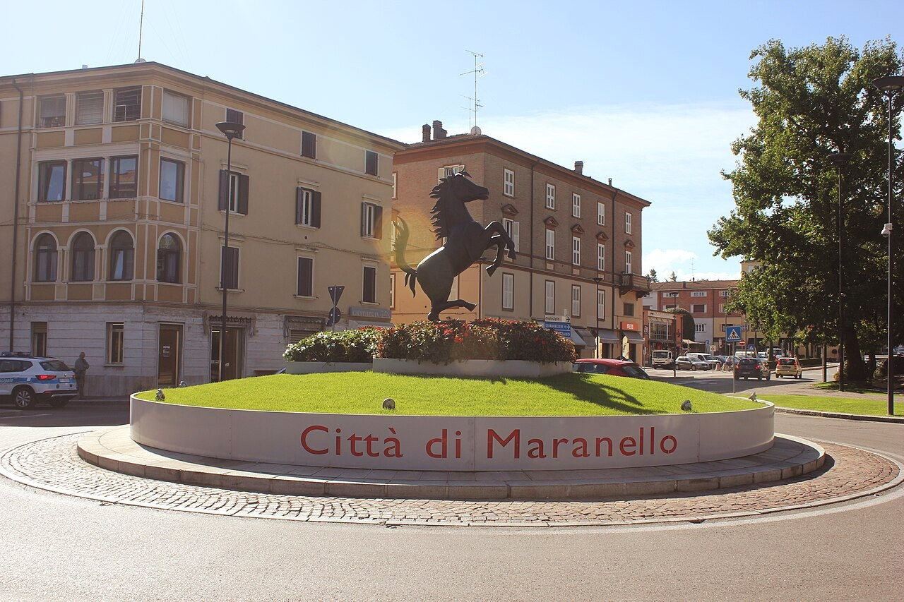
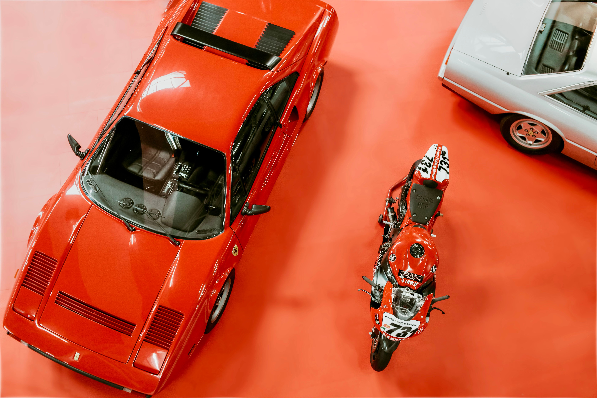
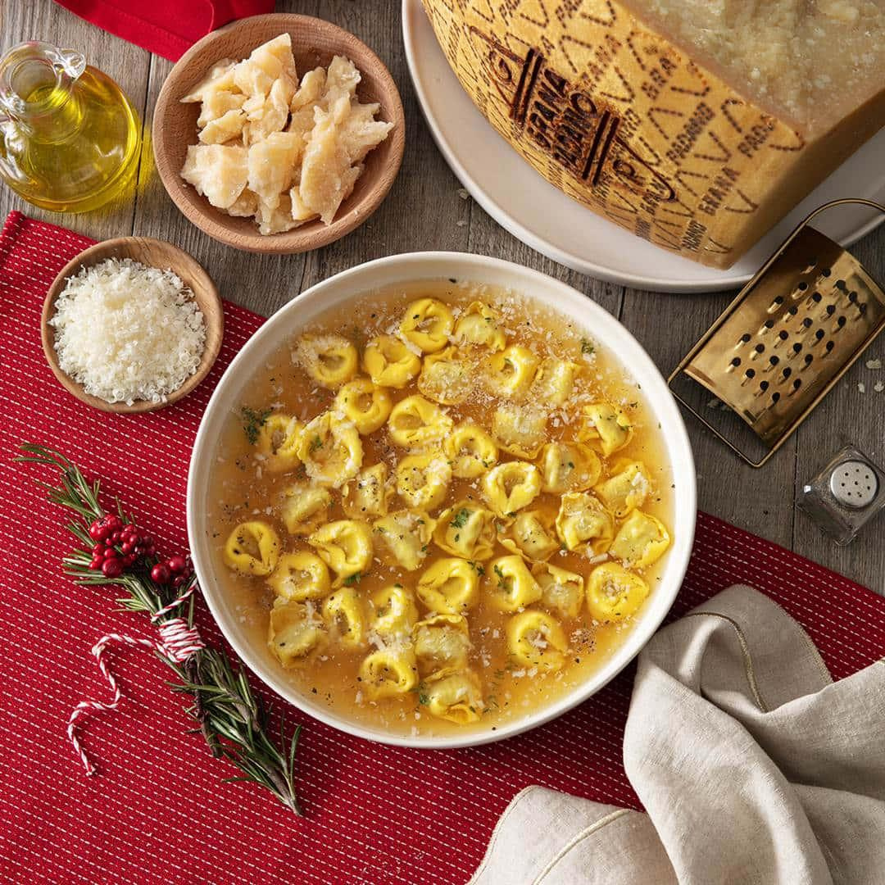
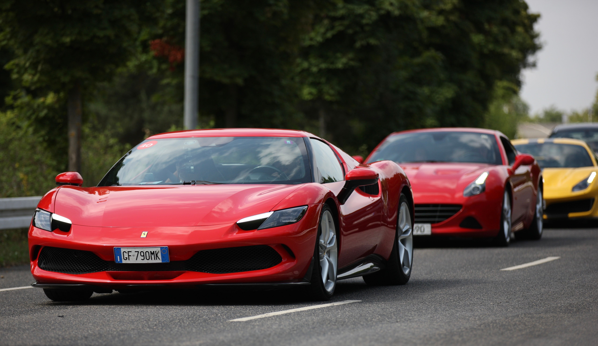

Sua Próxima Viagem:
Conheça Maranello

Maranello é uma encantadora cidade localizada na região da Emília-Romanha, no norte da Itália, mundialmente conhecida por abrigar a sede da lendária Ferrari. Cercada por belas paisagens, colinas e pela tranquilidade do interior italiano, a cidade combina tradição, cultura e paixão pelo automobilismo. Além do famoso Museu Ferrari e das experiências de direção de carros esportivos, Maranello oferece uma rica gastronomia, restaurantes tradicionais e uma atmosfera acolhedora. É um destino especial para quem deseja conhecer a história de uma das marcas mais icônicas do mundo e vivenciar o charme autêntico da Itália.
Para os amantes de historia, automobilismo e culinária.
Descubra 3 experiências imperdíveis em Maranello
Explore o melhor de Maranello: conheça a história e o legado da Ferrari em seu museu, descubra os sabores autênticos da culinária italiana e viva a emoção de dirigir uma Ferrari pelas estradas da cidade italiana.

1. Museu Ferrari — Uma história de velocidade
O Museu Ferrari, localizado no coração de Maranello, oferece uma viagem pela história de uma das marcas mais icônicas do automobilismo. Com uma coleção de carros históricos, modelos de Fórmula 1, troféus e exposições interativas, o museu celebra o legado de Enzo Ferrari e a evolução da marca ao longo das décadas.
Interesses:
- Histórico
- Fotográfica

2. Culinária — Os sabores da tradição italiana
A gastronomia de Maranello reflete as tradições da região da Emília-Romanha, conhecida por sua rica herança culinária. Pratos como tortellini, lasanha e massas artesanais, acompanhados de queijos regionais e do tradicional vinagre balsâmico de Modena, proporcionam uma experiência autêntica da cozinha italiana.
Ideal para:
- Família
- Casais
- Autenticidade

3. Ferrari Rental — A emoção de dirigir uma lenda
Em Maranello, a paixão pelo automobilismo vai além dos museus. As experiências de Ferrari Rental permitem assumir o volante de modelos esportivos da marca e percorrer as estradas da região, geralmente acompanhado por um instrutor. Uma oportunidade de sentir a potência, a precisão e a emoção de dirigir uma Ferrari na cidade onde sua história ganhou vida.
Ideal para:
- Criar experiências
- Fotos
- Aprendizagem

Após explorar a história da Ferrari, sentir a emoção de dirigir pelas ruas de Maranello e saborear a autêntica culinária italiana, ficam as lembranças de uma experiência inesquecível, onde tradição, velocidade e cultura se encontram em um só destino.